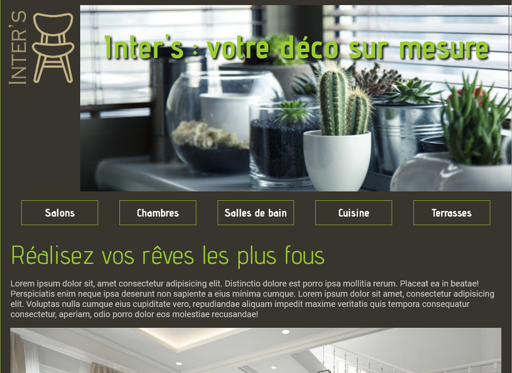
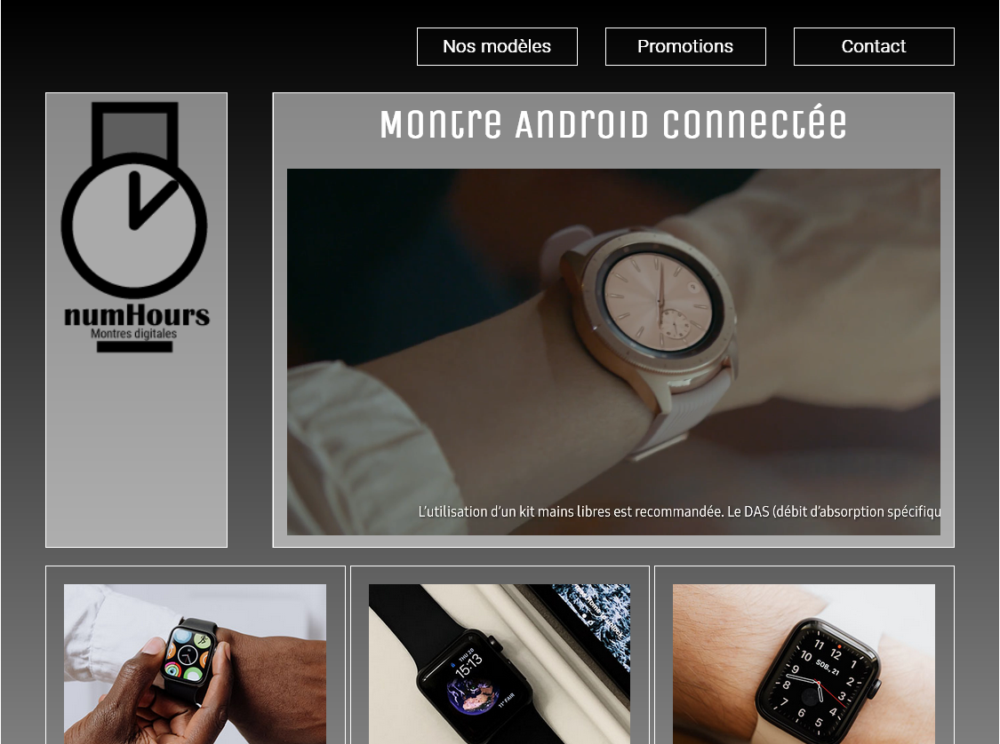

 inter's Intégration d'un site composé de 2 pages en tenant compte des standards, du référencement, de l'accessibilité et de l'ergonomie. Technos : HTML, CSS
 NumHours Intégration d'un site composé d'1 page en tenant compte des standards, du référencement, de l'accessibilité et de l'ergonomie. Technos : HTML, CSS